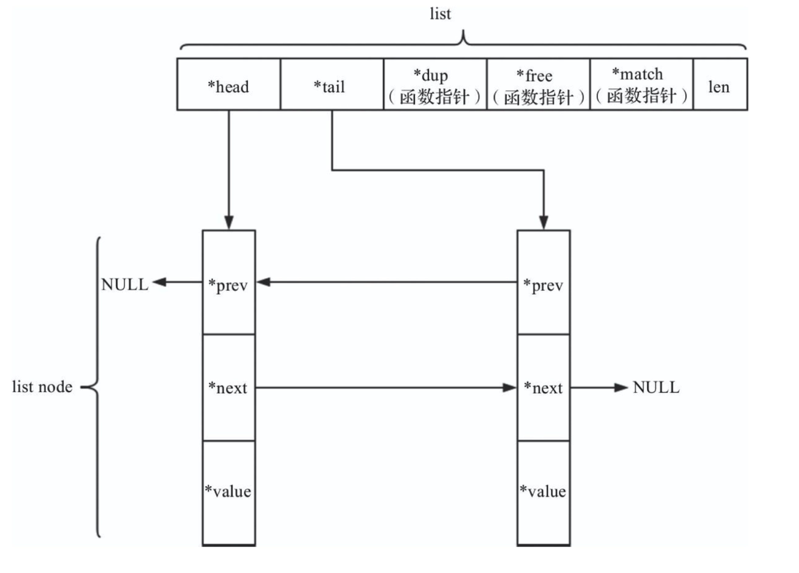
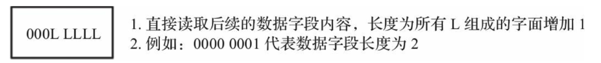
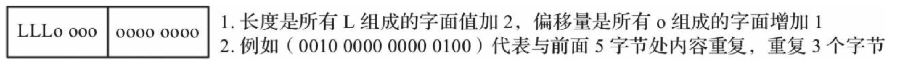
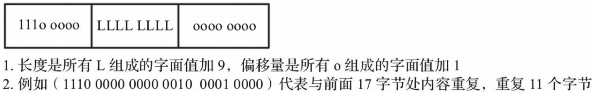

Redis 自己实现了底层的数据结构，简单动态字符串、跳跃表、压缩列表、字典、整数集合、quicklist、stream
| 底层数据结构 | 可存储对象类型 |
|---|---|
| 简单动态字符串 | 字符串 |
| quickList | 列表 |
| 字典 | 集合、散列表、有序集合 |
| 压缩列表 | 列表、散列表、有序集合 |
| 整数集合 | 集合 |
| 跳跃表 | 有序集合 |
| stream | stream |
简单动态字符串 SDS
简单动态字符串（Simple Dynamic Strings，SDS）是Redis的基本数据结构之一，用于存储字符串和整型数据。SDS兼容C语言标准字符串处理函数，且在此基础上保证了二进制安全。
struct __attribute__ ((__packed__))sdshdr5 {
unsigned char flags; /* 低3位存储类型, 高5位存储长度 */
char buf[];/*柔性数组，存放实际内容*/
};
struct __attribute__((__packed__))sdshdr8 {
uint8_t len; /* 已使用长度，用1字节存储 */
uint8_t alloc; /* 总长度，用1字节存储*/
unsigned char flags; /* 低3位存储类型, 高5位预留 */
char buf[];/*柔性数组，存放实际内容*/
};
struct __attribute__((__packed__))sdshdr16 {
uint16_t len; /*已使用长度，用2字节存储*/
uint16_t alloc; /* 总长度，用2字节存储*/
unsigned char flags; /* 低3位存储类型, 高5位预留 */
char buf[];/*柔性数组，存放实际内容*/
};
struct __attribute__((__packed__))sdshdr32 {
uint32_t len; /*已使用长度，用4字节存储*/
uint32_t alloc; /* 总长度，用4字节存储*/
unsigned char flags;/* 低3位存储类型, 高5位预留 */
char buf[];/*柔性数组，存放实际内容*/
};
struct __attribute__((__packed__))sdshdr64 {
uint64_t len; /*已使用长度，用8字节存储*/
uint64_t alloc; /* 总长度，用8字节存储*/
unsigned char flags; /* 低3位存储类型, 高5位预留 */
char buf[];/*柔性数组，存放实际内容*/
};
(1) SDS如何兼容C语言字符串？如何保证二进制安全？SDS对象中的buf是一个柔性数组，上层调用时，SDS直接返回了buf。由于buf是直接指向内容的指针，故兼容C语言函数。而当真正读取内容时，SDS会通过len来限制读取长度，而非“\0”，保证了二进制安全。
(2) sdshdr5的特殊之处是什么？sdshdr5只负责存储小于32字节的字符串。一般情况下，小字符串的存储更普遍，故Redis进一步压缩了sdshdr5的数据结构，将sdshdr5的类型和长度放入了同一个属性中，用flags的低3位存储类型，高5位存储长度。创建空字符串时，sdshdr5会被sdshdr8替代。
(3) SDS是如何扩容的？SDS在涉及字符串修改处会调用sdsMakeroomFor函数进行检查，根据不同情况动态扩容，该操作对上层透明。
跳跃表 zskiplist
通过将有序集合的部分节点分层，由最上层开始依次向后查找，如果本层的next节点大于要查找的值或next节点为NULL，则从本节点开始，降低一层继续向后查找，依次类推，如果找到则返回节点；否则返回NULL。采用该原理查找节点，在节点数量比较多时，可以跳过一些节点，查询效率大大提升，这就是跳跃表的基本思想。
跳跃表存储结构如下图所示：
接下来看下跳跃表的数据结构
// 定义了skiplist的节点结构
typedef struct zskiplistNode {
sds ele; //用于存储字符串类型的数据
double score; //用于存储排序的分支
struct zskiplistNode *backward; //后退指针，只能执行当前节点最底层的前一个节点，头节点和第一个节点的backward指向NULL，从后向前遍历跳跃表时使用
struct zskiplistLevel {
struct zskiplistNode *forward; //指向本层下一个节点，尾结点的forward指向null
unsigned int span; //forward 指向的节点与本节点之间的元素个数，span越大，跳过的节点个数越多。
} level[]; // 柔性数组，每个节点的数组长度不一样，在生成跳跃表节点时，随机生成一个 1~64 的值，值越大出现的概率越低
} zskiplistNode;
// 定义了真正的skiplist结构
typedef struct zskiplist {
struct zskiplistNode *header, *tail; // 头指针header和尾指针tail
unsigned long length; // 链表长度length，即链表包含的节点总数。创建的skiplist包含一个空的头指针，这个头指针不包含在length计数中
int level; //skiplist的总层数，即所有节点层数的最大值
} zskiplist;
所有节点是按照分值 score 从小到大的方式排序的，当有序集合的 score 相同时，节点会按照 ele 的字典序进行排序。
压缩列表 ziplist
压缩列表ziplist本质上就是一个字节数组(一块连续的内存空间)，是Redis为了节约内存而设计的一种线性数据结构，可以包含多个元素，每个元素可以是一个字节数组或一个整数。ziplist 的存储顺序与插入顺序一致，而散列表的存储则不一致。
压缩列表 ziplist 存储结构
压缩列表 结构示意图如下：
- zlbytes： 占4个字节，压缩列表的字节长度，因此压缩列表最多有232 -1个字节。
- zltail： 占4个字节,压缩列表尾元素相对于压缩列表起始地址的偏移量。
- zllen： 占2个字节,压缩列表的元素个数。zllen无法存储元素个数超过65535（216 -1）的压缩列表，必须遍历整个压缩列表才能获取到元素个数。
- entryX： 压缩列表存储的元素，可以是字节数组或者整数，长度不限。
- zlend： 占1个字节，压缩列表的结尾，恒为0xFF。
查看一个压缩列表示例：
了解了压缩列表的基本结构，我们可以很容易地获得压缩列表的字节长度、元素个数等，那么如何遍历压缩列表呢？对于任意一个元素，我们如何判断其存储的是什么类型呢？我们又如何获取字节数组的长度呢？
压缩列表元素的结构示意图如下所示：
previous_entry_length 字段表示前一个元素的字节长度，占1个或者5个字节，
- 当前一个元素的长度小于254字节时，用1个字节表示；
- 当前一个元素的长度大于或等于254字节时，用5个字节来表示。而此时previous_entry_length字段的第1个字节是固定的0xFE，后面4个字节才真正表示前一个元素的长度。
假设已知当前元素的首地址为p，那么p - previous_entry_length就是前一个元素的首地址，从而实现压缩列表从尾到头的遍历。
encoding字段表示当前元素的编码，即content字段存储的数据类型（整数或者字节数组），数据内容存储在content字段。为了节约内存，encoding字段同样长度可变。
压缩列表元素的编码如下表所示：
| encoding编码 | encoding 长度 | content类型 |
|---|---|---|
| 00 bbbbbb (6 比特表示content长度) | 1字节 | 最大长度为63的字节数组 |
| 01 bbbbbb xxxxxxxx (14比特表示content 长度) | 2字节 | 最大长度为214 -1 的字节数组 |
| 10 aaaaaaaa bbbbbbbb cccccccc dddddddd (32比特表示 content长度) | 5字节 | 最大长度为232 -1 的字节数组 |
| 11 00 0000 | 1字节 | int 16整数 |
| 11 01 0000 | 1字节 | int 32整数 |
| 11 10 0000 | 1字节 | int 64整数 |
| 11 11 0000 | 1字节 | 24位整数 |
| 11 11 1110 | 1字节 | 8位 整数 |
| 11 11 xxxx | 1字节 | 没有 content 字段 xxxx 表示 0~12的整数，数据直接存储在encoding字段的最后4位 |
Redis 定义的 encoding 字段的各个编码类型：
#define ZIP_STR_06B (0 << 6)
#define ZIP_STR_14B (1 << 6)
#define ZIP_STR_32B (2 << 6)
#define ZIP_INT_16B (0xc0 | 0<<4)
#define ZIP_INT_32B (0xc0 | 1<<4)
#define ZIP_INT_64B (0xc0 | 2<<4)
#define ZIP_INT_24B (0xc0 | 3<<4)
#define ZIP_INT_8B 0xfe
由于previous_entry_length存储前一个元素的字节长度，长度占1个或5个字节，为了能存储前一个元素的字节长度，在更新压缩列表过程中可能会出现一种被称为“连锁更新”的现象，Redis 在删除和插入元素操作的末尾检查是需要更新后续元素的 previous_entry_length字段，不过其造成性能问题的几率很低
压缩列表 ziplist 的结构体
我们发现对于压缩列表的任意元素，获取前一个元素的长度、判断存储的数据类型、获取数据内容都需要经过复杂的解码运算。解码后的结果应该被缓存起来，为此定义了结构体zlentry，用于表示解码后的压缩列表元素。
typedef struct zlentry {
unsigned int prevrawlensize; //previous_entry_length 字段的长度
unsigned int prevrawlen; //previous_entry_length 字段存储的内容
unsigned int lensize; //encoding 字段的长度
unsigned int len; //encoding 元素数据内容的长度
unsigned char encoding; //encoding中 数据类型
unsigned int headersize; // 表示当前元素的首部长度，即previous_entry_lengh字段长度与encoding字段长度之和
unsigned char *p; //当前元素首地址
} zlentry;
字典 Dict
字典又称为散列表，是用来存储键值 (key-value) 对的一种数据结构，Redis 是K-V 型数据库，任何的增删改查操作实际上都是对字典中的数据进行增删改查操作。
Redis 字典实现依赖的数据结构主要包含了三部分：字典、Hash表、Hash表节点。字典中嵌入了两个 Hash 表，Hash 表中的table字段存放 Hash 表节点，Hash 表节点对应存储的是键值对。
- Hash表的数据结构如下：
typedef struct dictht {
dictEntry **table; /* 指针数组，用于存储键值对*/
unsigned long size; /* table数组的总大小*/
unsigned long sizemask; /* 掩码 = size - 1 ，用来计算键的索引值*/
unsigned long used; /* table数组已存元素个数，包含next单链表的数据*/
} dictht;
- Hash 表节点的数据结构如下：
typedef struct dictEntry {
void *key; /*存储键*/
union {
void *val; /*redisDb.dict 中的val*/
uint64_t u64;
int64_t s64; /*redisDb.expires 中存储过期时间*/
double d;
} v;
struct dictEntry *next; /*当Hash冲突时，指向冲突的元素，形成单链表*/
} dictEntry;
- 最外层的 字典 Dict 数据结构 如下：
typedef struct dict {
dictType *type; /*该字典对应的一组特定操作抽象函数*/
void *privdata; /*该字典依赖的数据，配合type字段指向的函数一起使用*/
dictht ht[2]; /* Hash 表的数组，键值对存储在这里，一般情况下只会使用ht[0]，只有当盖子点扩容、缩容需要进行rehash ，才会使用到ht[1]*/
long rehashidx; /*rehash标识。默认值为-1，代表没进行rehash操作；不为-1时，代表正进行rehash操作，存储的值表示Hash表ht[0]的rehash操作进行到了哪个索引值*/
unsigned long iterators; /* 当前运行的迭代器数*/
} dict;
Redis字典这个数据结构，除了主数据库的K-V数据存储外，还有很多其他地方会用到。例如，Redis的哨兵模式，就用字典存储管理所有的Master节点及Slave节点；再如，数据库中键值对的值为Hash类型时，存储这个Hash类型的值也是用的字典。在不同的应用中，字典中的键值对形态都可能不同，而dictType结构体，则是为了实现各种形态的字典而抽象出来的一组操作函数。
Redis 字典结构的完整版
在Hash 表扩容或者收缩的时候，程序需要将现有的哈希表中的所有键值对rehash 到新的 Hash表里面，此rehash 过程不是一次性完成的，而是渐进式的完成。
整数集合
整数集合 intset 的底层实现为数组， 是一个有序的、无重复数据的、存储整形数据的结构。
在两种情况下，set 集合 底层编码会发生转换：
- 当元素个数超过一定数量(默认值512)之后，即使元素类型仍然是整型，也会将编码转换为 hashtable。由配置项 set-max-intset-entries 512 决定。
- 当增加非整型变量是，例如集合中增加元素 'a' ，集合编码从 intset 转换为 hashtable。
整数集合在Redis 中可以保存 int16_t、int32_t、int64_t类型的整型数据，并且可以保证集合中不会出现重复数据。每个整数集合使用一个 intset 类型的数据结构表示。
intset 数据结构如下：
typedef struct intset {
uint32_t encoding;//编码类型
uint32_t length;//元素个数
int8_t contents[];//柔性数组,根据encoding字段决定几个字节表示一个元素
} intset
- encoding
编码类型，决定每个元素占用几个字节- INTSET_ENC_INT16：当元素值都位于INT16_MIN和INT16_MAX之间时使用。该编码方式为每个元素占用2个字节。
- INTSET_ENC_INT32：当元素值位于INT16_MAX到INT32_MAX或者INT32_MIN到INT16_MIN之间时使用。该编码方式为每个元素占用4个字节。
- INTSET_ENC_INT64：当元素值位于INT32_MAX到INT64_MAX或者INT64_MIN到INT32_MIN之间时使用。该编码方式为每个元素占用8个字节。
当 存放新元素到 整数集合中的时候，如果新元素的类型比整数集合现有所有元素的类型都要长时，整数集合需要先进性升级，然后才能将新元素添加到整数集合里面。
整数集合的升级操作提升了它的灵活性又尽可能的节约了内存空间。
quicklist
quicklist 存储数据结构
quicklist是Redis底层最重要的数据结构之一，它是Redis对外提供的6种基本数据结构中List的底层实现。
list
链表是这样一种数据结构，其中的各对象按线性顺序排列。
链表与数组的不同点在于，数组的顺序由下标决定，链表的顺序由对象中的指针决定。
List是链型数据存储常用的数据结构，可以是单向链表、双向链表，可以是排序链表、无序链表，可以是循环链表、非循环链表。
链表具有可快速插入、删除的优点。
由于List查找复杂度为O(n)，n为元素个数，所以不适用于快速查找的场合。
双向非循环链表结构图：
 quicklist
quicklist是Redis 3.2中新引入的数据结构，能够在时间效率和空间效率间实现较好的折中。
quicklist是一个由 ziplist 充当节点的双向链表。quicklist是一个双向链表，链表中的每个节点是一个 ziplist 结构。
quicklist可以看成是用双向链表将若干小型的ziplist连接到一起组成的一种数据结构。
当ziplist节点个数过多，quicklist退化为双向链表，一个极端的情况就是每个ziplist节点只包含一个entry，即只有一个元素。当ziplist元素个数过少时，quicklist可退化为ziplist，一种极端的情况就是quicklist中只有一个ziplist节点。
quicklist核心结构如下：
typedef struct quicklist {
quicklistNode *head; // 头节点
quicklistNode *tail; // 尾节点
unsigned long count; //quicklist中元素总数
unsigned long len; // quicklistNode节点个数
//指明每个quickListNade 中ziplist长度
//当fill为正数时，表明每个ziplist最多含有的数据项数。
//当fill为负数时，fill == -1 ：ziplist节点最大为 4KB；
//fill == -2 ：ziplist节点最大为8KB；
//fill == -3 ：ziplist节点最大为16KB；
//fill == -4 ：ziplist节点最大为32KB；
//fill == -5 ：ziplist节点最大为64KB
int fill : 16;
//Redis允许对中间的quicklistNode节点进行压缩，
//通过修改参数list-compress-depth进行配置，即设置compress参数
//该项的具体含义是两端各有compress个节点不压缩 ,
//通过修改参数list-compress-depth进行配置，0=off
unsigned int compress : 16;
} quicklist;
typedef struct quicklistNode {
struct quicklistNode *prev; // 指向该节点的前节点
struct quicklistNode *next; // 指向该节点的后节点
unsigned char *zl; //指向该节点对应的 ziplist 结构
unsigned int sz; //代表整个 ziplist 结构的大小
unsigned int count : 16; // ziplist 中元素个数
unsigned int encoding : 2; //代表采用的编码，1：原生结构；2：使用 LZF 进行压缩
unsigned int container : 2; //为quicklistNode节点 zl 指向的容器类型，1: none；2: 使用 ziplist 存储数据
unsigned int recompress : 1; // 这个节点之前是否是压缩节点，若是，则在使用压缩节点前新进行解压缩，使用后需要重新压缩；1的时候代表是压缩节点。
unsigned int attempted_compress : 1; // 测试时使用，
unsigned int extra : 10; //预留字段
} quicklistNode;
/* 当对 ziplist 利用 LZF 算法进行压缩时，quicklistNode 节点指向的结构为 quicklistLZF*/
typedef struct quicklistLZF {
unsigned int sz; // compressed 所占用的 字节大小
char compressed[];
} quicklistLZF;
/* 当使用quicklistNode中ziplist中的一个节点时，Redis提供了quicklistEntry结构以便于使用 */
typedef struct quicklistEntry {
const quicklist *quicklist; // 指向当前元素所在的quicklist
quicklistNode *node; // 指向当前元素所在的quicklistNode结构
unsigned char *zi; // 指向当前元素所在的ziplist
unsigned char *value; // 指向该节点的字符串内容
long long longval; // longval为该节点的整型值
unsigned int sz; // sz代表该节点的大小，与value配合使用
int offset; // 表明该节点相对于整个ziplist的偏移量，即该节点是ziplist第多少个entry
} quicklistEntry;
// quicklistIter是quicklist中用于遍历的迭代器
typedef struct quicklistIter {
const quicklist *quicklist; //指向当前元素所处的quicklist
quicklistNode *current; // 指向元素所在quicklistNode
unsigned char *zi; // 指向元素所在的ziplist
long offset; // 表明节点在所在的ziplist中的偏移量
int direction; //direction表明迭代器的方向
} quicklistIter;
数据压缩
quicklist每个节点的实际数据存储结构为ziplist，这种结构的主要优势在于节省存储空间。
为了进一步降低ziplist所占用的空间，Redis 允许对ziplist进一步压缩，Redis采用的压缩算法是LZF，压缩过后的数据可以分成多个片段，每个片段有2部分：一部分是解释字段，另一部分是存放具体的数据字段。解释字段可以占用1～3个字节，数据字段可能不存在。
LZF压缩后的数据结构图如下所示：
LZF压缩的数据格式有3种，即解释字段有3种：
字面型，解释字段占用1个字节，数据字段长度由解释字段后5位决定。
 简短重复型，解释字段占用2个字节，没有数据字段，数据内容与前面数据内容重复，重复长度小于8，图中L 是长度字段，数据长度为长度字段的字面值加2，o是偏移量字段，位置偏移量是偏移字段组成的字面值加1。
 批量重复型，解释字段占3个字节，没有数据字段，数据内容与前面内容重复。图中L是长度字段，数据长度为长度字段的字面值加9，o是偏移量字段，位置偏移量是偏移字段组成的字面值加1。

压缩
LZF数据压缩的基本思想是：数据与前面重复的，记录重复位置以及重复长度，否则直接记录原始数据内容。
压缩算法的流程如下：遍历输入字符串，对当前字符及其后面2个字符进行散列运算，如果在Hash表中找到曾经出现的记录，则计算重复字节的长度以及位置，反之直接输出数据。
解压缩
根据LZF压缩后的数据格式，我们可以较为容易地实现LZF的解压缩。值得注意的是，可能存在重复数据与当前位置重叠的情况，此时需要按位逐个进行复制。